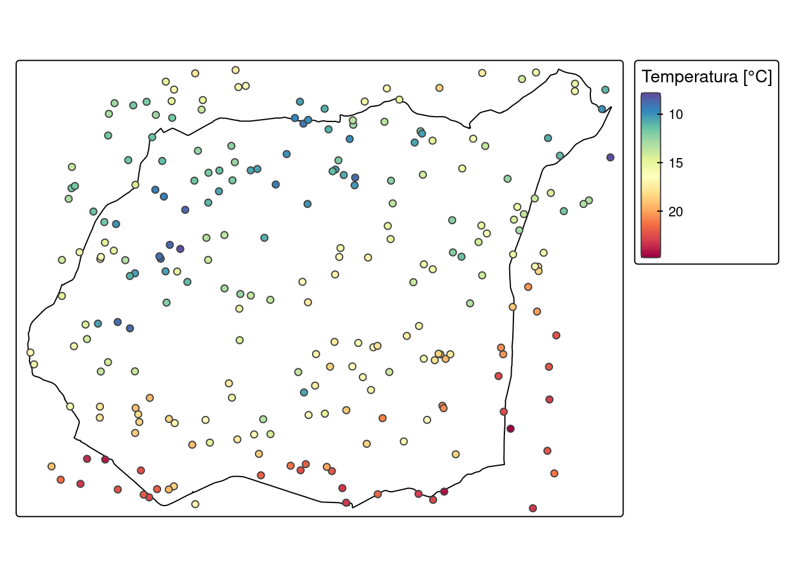
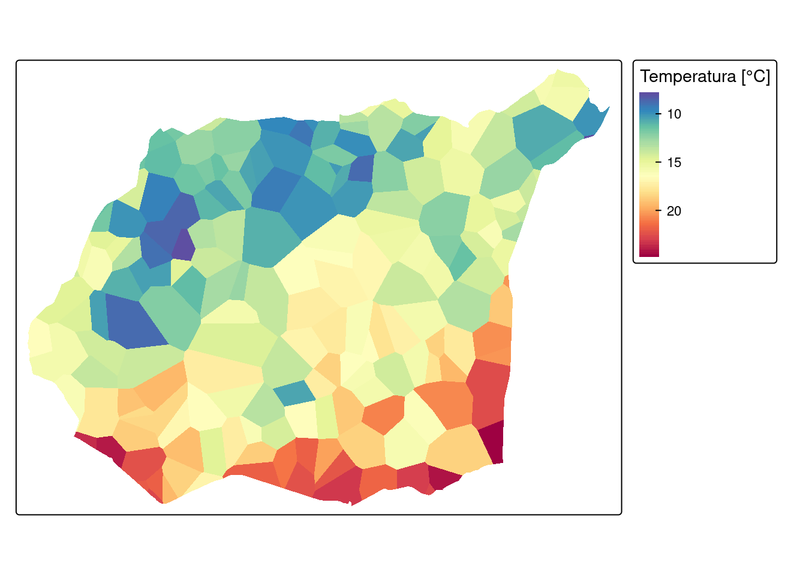
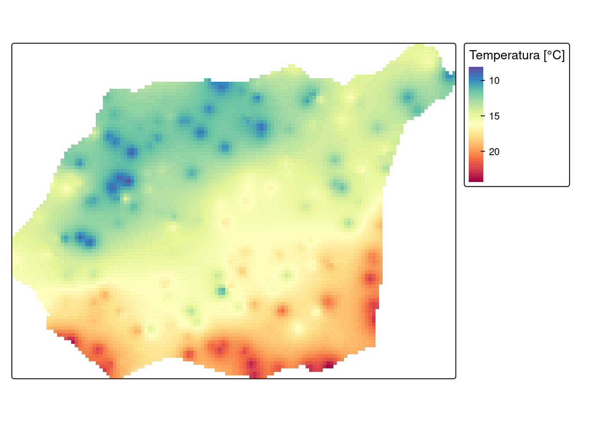
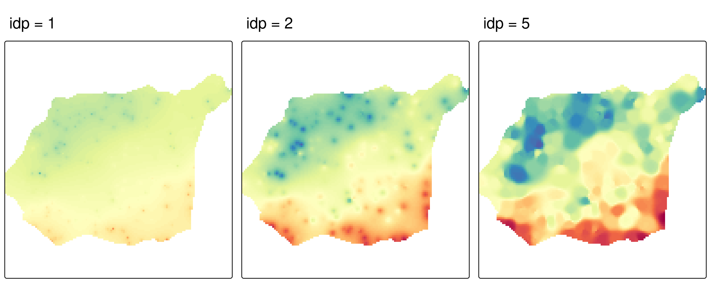
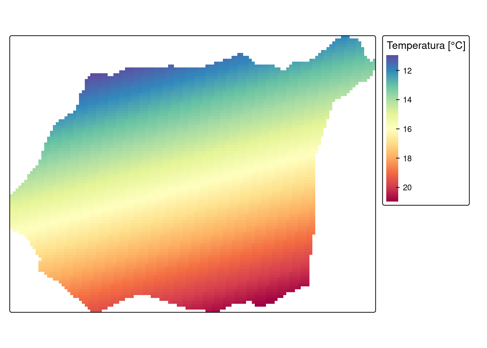
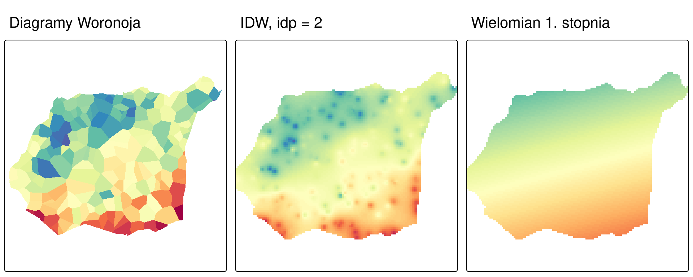

library(sf)
library(terra)
library(gstat)
library(tmap)
library(dplyr)8 Metody interpolacji
Czego się nauczysz
Po tym rozdziale potrafisz wykonać w R:
- utworzyć siatkę interpolacyjną o zadanej rozdzielczości (
rast()), - wykonać interpolację metodą diagramów Woronoja (
voronoi()), - wykonać interpolację metodą średniej ważonej odwrotnością odległości (
gstat()+interpolate()), - obliczyć wartość IDW ręcznie, ze wzoru, dla kilku punktów pomiarowych,
- wykonać interpolację funkcjami wielomianowymi (
gstat(degree = )), - przyciąć wynik do granicy obszaru i porównać mapy uzyskane różnymi metodami.
Rozumiesz i umiesz zinterpretować:
- jak wykładnik potęgowy steruje wygładzeniem powierzchni interpolowanej,
- dlaczego wartości IDW mieszczą się w zakresie wartości pomiarowych,
- dlaczego diagramy Woronoja dają powierzchnię skokową, a pozostałe metody ciągłą,
- co odróżnia powierzchnię dopasowaną wielomianem od powierzchni IDW,
- po co do interpolacji używa się także punktów leżących poza granicą obszaru.
Teoria: Najważniejsze informacje. Funkcje: Załącznik B. Słownik: Załącznik D.
8.1 Wprowadzenie
Dane pomiarowe opisujące zjawisko ciągłe — temperaturę powietrza, sumę opadów, wysokość terenu — zbierane są w punktach, a potrzebne są zwykle dla całego obszaru. Interpolacja przestrzenna szacuje wartość cechy w lokalizacjach, w których pomiaru nie wykonano, na podstawie wartości zmierzonych w lokalizacjach sąsiednich.
W tym rozdziale wykonujemy interpolację metodami deterministycznymi: ich parametry ustala analityk, a wynikiem jest wyłącznie oszacowana wartość. Oszacowanie błędu estymacji dają metody geostatystyczne, którymi zajmują się trzy kolejne rozdziały — poprzedza je opis struktury przestrzennej zmiennej (Rozdział 9), a następnie estymacja (Rozdział 10) i ocena jej jakości (Rozdział 11).
Definicje, klasyfikacja metod i wzory znajdują się w rozdziale teoretycznym części. Tutaj interesuje nas, jak wykonać interpolację w R i czym różnią się jej wyniki.
8.2 Struktura obiektów: siatka interpolacyjna
Większość metod interpolacji wymaga wskazania lokalizacji, dla których ma zostać policzone oszacowanie. Lokalizacje te tworzą siatkę interpolacyjną — pusty raster o zadanym zasięgu i rozdzielczości, w którym każda komórka jest jednym punktem estymacji. Wynikiem interpolacji jest ten sam raster z wypełnionymi wartościami.
Siatkę budujemy obiektem klasy SpatRaster z pakietu terra. Rozdzielczość jest decyzją analityka: im mniejsza komórka, tym więcej punktów estymacji i dłuższe obliczenia, przy niezmienionej liczbie punktów pomiarowych. W całej części geostatystycznej używamy rozdzielczości 90 m.
Wyjątkiem są diagramy Woronoja, które siatki nie potrzebują: dzielą obszar na poligony przypisane poszczególnym punktom pomiarowym, więc ich wynik jest warstwą wektorową.
8.3 Metody interpolacji deterministycznej w R
| Metoda | Funkcja | Pakiet | Wynik |
|---|---|---|---|
| diagramy Woronoja | voronoi() |
terra |
warstwa wektorowa (SpatVector) |
| średniej ważonej odwrotnością odległości (IDW) | gstat(set = list(idp = )) + interpolate() |
gstat, terra |
raster (SpatRaster) |
| funkcje wielomianowe | gstat(degree = ) + interpolate() |
gstat, terra |
raster (SpatRaster) |
Pełne zestawienie funkcji — Załącznik B.
Funkcja interpolate() z pakietu terra wypełnia siatkę wartościami policzonymi przez model. Dla modeli pakietu gstat potrzebuje pośrednika, który zamieni współrzędne komórek rastra na obiekt przestrzenny, wywoła predict() i odda samą tabelę wyników. Poniższa funkcja robi dokładnie to i jest używana we wszystkich krokach opartych na gstat().
interpolate_gstat = function(model, x, ...) {
# x to tabela współrzędnych komórek siatki przekazana przez interpolate();
# remove = FALSE zachowuje kolumny x i y, potrzebne modelom używającym współrzędnych
v = st_as_sf(x, coords = c("x", "y"), crs = st_crs(model$data[[1]]$data), remove = FALSE)
p = predict(model, v, ...)
st_drop_geometry(p)
}8.4 Przykład: temperatura powietrza
Kroki analizy
- Wczytanie i przygotowanie danych —
read.csv(),filter(),st_as_sf(),vect(). - Siatka interpolacyjna —
rast(). - Diagramy Woronoja —
voronoi(),crop(). - Metoda IDW —
gstat(),interpolate(),mask(). - Funkcje wielomianowe —
gstat(degree = ),interpolate(),mask(). - Porównanie metod i zapis wyników —
tmap_arrange(),writeRaster().
Kod spoza tych sześciu kroków jest objaśnieniem: nie trzeba go uruchamiać, żeby wykonać analizę.
Krok 1: dane
data/punkty.csv— pomiary temperatury powietrza wraz ze współrzędnymi w kolumnachxiy,data/granica.gpkg— granica obszaru badań.
Kolumna temp zawiera jedną brakującą wartość. Wiersz z brakiem usuwamy funkcją filter(), przed zamianą tabeli na obiekt przestrzenny: st_as_sf() przerywa działanie, jeśli trafi na brak wartości we współrzędnych, a indeksowanie podstawowe R pozostawiłoby w zbiorze wiersz widmo.
punkty = read.csv("data/punkty.csv") |>
filter(!is.na(temp)) |>
st_as_sf(coords = c("x", "y"), crs = "EPSG:2180")
granica = vect("data/granica.gpkg")
punktySimple feature collection with 247 features and 5 fields
Geometry type: POINT
Dimension: XY
Bounding box: xmin: 745592.5 ymin: 712642.4 xmax: 756967.8 ymax: 721238.7
Projected CRS: ETRF2000-PL / CS92
First 10 features:
srtm clc temp ndvi savi geometry
1 175.7430 1 13.852222 0.6158061 0.4189449 POINT (750298 716731.6)
2 149.8111 1 15.484209 0.5558816 0.3794864 POINT (753482.9 717331.4)
3 272.8583 NA 12.760814 0.6067462 0.3745572 POINT (747242.5 720589)
4 187.2777 1 14.324648 0.3756170 0.2386246 POINT (755798.9 718828.1)
5 260.1366 1 15.908549 0.4598393 0.3087599 POINT (746963.5 717533.5)
6 160.1416 2 9.941118 0.5600288 0.3453627 POINT (756801.6 720474.1)
7 192.9223 2 13.514751 0.6009588 0.3737249 POINT (752698 718623.6)
8 234.9989 1 12.919225 0.4979195 0.2978503 POINT (749399.8 716955.2)
9 228.7312 1 19.247132 0.3819634 0.2077981 POINT (748766.6 713889)
10 240.5474 2 10.529105 0.5795159 0.3805268 POINT (749290.4 718861)Wypisany obiekt jest klasy sf. Nagłówek podaje liczbę obiektów i pól atrybutowych, typ geometrii (POINT), zasięg przestrzenny oraz układ współrzędnych — PUWG 1992, wypisywany przez R jako ETRF2000-PL / CS92. Jest to układ odwzorowany, więc odległości i rozdzielczość siatki wyrażamy w metrach.
Granicę wczytujemy funkcją vect() jako obiekt SpatVector pakietu terra, bo to jej zasięgiem posłużymy się przy budowie siatki i nią przytniemy wyniki.
tm_shape(granica) +
tm_borders(col = "black") +
tm_shape(punkty) +
tm_symbols(fill = "temp",
fill.scale = tm_scale_continuous(values = "-brewer.spectral"),
fill.legend = tm_legend(title = "Temperatura [°C]"),
size = 0.4)
Zwróć uwagę, że część punktów pomiarowych leży poza granicą obszaru: wewnątrz granicy znajduje się 178 z 247 punktów. Do interpolacji używamy wszystkich — punkty zewnętrzne poprawiają oszacowania przy brzegu obszaru, gdzie inaczej sąsiedzi byliby wyłącznie z jednej strony. Do granicy przycinamy dopiero wynik.
Krok 2: siatka interpolacyjna
Funkcja rast() tworzy pusty raster. Argument ext przejmuje zasięg z warstwy granicy, res ustala rozdzielczość, a crs — układ współrzędnych.
siatka = rast(ext = granica, res = 90, crs = crs(granica))
siatkaclass : SpatRaster
size : 96, 127, 1 (nrow, ncol, nlyr)
resolution : 90, 90 (x, y)
extent : 745541.7, 756971.7, 712651.6, 721291.6 (xmin, xmax, ymin, ymax)
coord. ref. : ETRF2000-PL / CS92 (EPSG:2180) Wypis obiektu SpatRaster podaje kolejno: liczbę wierszy, kolumn i warstw (size), rozdzielczość w jednostkach układu (resolution — 90 × 90 m), zasięg przestrzenny (extent) oraz układ współrzędnych. Raster ma 12 192 komórek i na razie nie zawiera żadnych wartości — wypełnią go kolejne kroki.
Krok 3: diagramy Woronoja
Metoda dzieli obszar na poligony: każdy punkt pomiarowy dostaje poligon obejmujący wszystkie lokalizacje położone bliżej niego niż któregokolwiek innego punktu. Wartość punktu zostaje wpisana w cały jego poligon.
Funkcja voronoi() z pakietu terra przyjmuje warstwę punktową SpatVector, więc obiekt sf zamieniamy funkcją vect(). Wynik przycinamy do granicy funkcją crop().
woronoj = voronoi(vect(punkty))
woronoj_granica = crop(woronoj, granica)
woronoj_granica class : SpatVector
geometry : polygons
dimensions : 209, 5 (geometries, attributes)
extent : 745541.7, 756989.3, 712651.6, 721256.2 (xmin, xmax, ymin, ymax)
coord. ref. : ETRF2000-PL / CS92 (EPSG:2180)
names : srtm clc temp ndvi savi
type : <num> <int> <num> <num> <num>
values : 232 1 16.52 0.5797 0.3936
247.2 1 15.67 0.4455 0.2967
234.1 1 15.6 0.5919 0.4027Po przycięciu zostaje 209 poligonów z 247 utworzonych — poligony punktów leżących w całości poza granicą zostały usunięte.
tm_shape(woronoj_granica) +
tm_polygons(fill = "temp",
fill.scale = tm_scale_continuous(values = "-brewer.spectral"),
fill.legend = tm_legend(title = "Temperatura [°C]"),
col = NULL)
Krok 4: metoda średniej ważonej odwrotnością odległości
Metoda IDW (ang. inverse distance weighted) oblicza wartość w nieznanej lokalizacji jako średnią ważoną wartości punktów pomiarowych, w której waga maleje wraz z odległością:
\[z = \frac{\sum_{i=1}^{n} w_i z_i}{\sum_{i=1}^{n} w_i}, \qquad w_i = \frac{1}{d_i^{\,p}}\]
gdzie \(z_i\) to wartość w punkcie \(i\), \(d_i\) — odległość tego punktu od lokalizacji szacowanej, a \(p\) — wykładnik potęgowy.
Zanim użyjemy gotowej funkcji, policzmy wartość wprost ze wzoru. Poniższa funkcja przyjmuje wektor wartości punktów pomiarowych, wektor ich odległości od lokalizacji szacowanej oraz wykładnik potęgowy.
idw = function(wartosc, d, power = 2) {
wagi = 1 / (d ^ power)
sum(wagi * wartosc) / sum(wagi)
}
wartosc = c(10, 15, 20)
d = c(100, 150, 600)
idw(wartosc, d, power = 0)[1] 15idw(wartosc, d, power = 1)[1] 12.72727idw(wartosc, d, power = 2)[1] 11.69811Przy power = 0 wszystkie wagi są równe, więc wynik jest zwykłą średnią arytmetyczną. Wraz ze wzrostem wykładnika oszacowanie przesuwa się w stronę wartości punktu najbliższego — tutaj punktu o wartości 10 oddalonego o 100 m.
W siatce interpolację wykonują dwa wywołania. Funkcja gstat() zapisuje parametry: formula = temp ~ 1 oznacza, że szacujemy zmienną temp bez zmiennych objaśniających, locations wskazuje punkty pomiarowe, a set = list(idp = 2) ustala wykładnik potęgowy. Funkcja interpolate() wypełnia siatkę, a mask() przycina wynik do granicy.
idw_param = gstat(id = "temp", formula = temp ~ 1, locations = punkty,
set = list(idp = 2))
idw_interp = interpolate(siatka, idw_param, fun = interpolate_gstat, debug.level = 0)
idw_granica = mask(idw_interp, granica)
names(idw_granica)[1] "temp.pred" "temp.var" Wynik ma dwie warstwy: temp.pred z oszacowaniami i temp.var z wariancją, która dla metody deterministycznej pozostaje pusta. Mapujemy warstwę temp.pred.
tm_shape(idw_granica) +
tm_raster(col = "temp.pred",
col.scale = tm_scale_continuous(values = "-brewer.spectral"),
col.legend = tm_legend(title = "Temperatura [°C]"))
Objaśnienie — poza ścieżką zadania
Wykładnik potęgowy steruje tym, jak szybko maleje wpływ punktów odległych, a więc stopniem wygładzenia powierzchni. Poniżej ta sama interpolacja przy trzech wartościach wykładnika.
# ta sama interpolacja przy trzech wartościach wykładnika potęgowego
idw_p = function(p) {
interpolate(siatka,
gstat(id = "temp", formula = temp ~ 1, locations = punkty,
set = list(idp = p)),
fun = interpolate_gstat, debug.level = 0) |>
mask(granica)
}
idw_1 = idw_p(1)
idw_5 = idw_p(5)
mapa_p = function(r, tytul) {
tm_shape(r) +
tm_raster(col = "temp.pred",
col.scale = tm_scale_continuous(values = "-brewer.spectral",
limits = c(7.5, 25)),
col.legend = tm_legend(show = FALSE)) +
tm_title(tytul)
}
tmap_arrange(mapa_p(idw_1, "idp = 1"),
mapa_p(idw_granica, "idp = 2"),
mapa_p(idw_5, "idp = 5"), ncol = 3)
Przy idp = 1 zakres oszacowań jest wyraźnie węższy od zakresu pomiarów, a powierzchnia gładka: każde oszacowanie powstaje z wkładu wielu punktów, więc wartości skrajne są uśrednione. Przy idp = 5 powierzchnia zbliża się kształtem do diagramów Woronoja, bo o wyniku decyduje niemal wyłącznie punkt najbliższy. Liczby dla tych trzech wariantów zestawione są w interpretacji wyniku.
Krok 5: funkcje wielomianowe
Interpolacja wielomianowa dopasowuje do wszystkich punktów pomiarowych jedną gładką powierzchnię opisaną funkcją matematyczną. Stopień wielomianu określa, jak bardzo powierzchnia może się wyginać: stopień 1 to płaszczyzna, wyższe stopnie dopuszczają wygięcia.
Wywołanie jest takie samo jak dla IDW — zmienia się jeden argument: degree zamiast set = list(idp = ).
wielomian_param = gstat(formula = temp ~ 1, locations = punkty, degree = 1)
wielomian_interp = interpolate(siatka, wielomian_param, fun = interpolate_gstat,
debug.level = 0)
wielomian_granica = mask(wielomian_interp, granica)tm_shape(wielomian_granica) +
tm_raster(col = "var1.pred",
col.scale = tm_scale_continuous(values = "-brewer.spectral"),
col.legend = tm_legend(title = "Temperatura [°C]"))
Wynik jest płaszczyzną nachyloną w kierunku, w którym temperatura rośnie — pojedynczy punkt pomiarowy nie może jej lokalnie odkształcić.
Krok 6: porównanie metod i zapis wyników
Trzy mapy zestawiamy na jednej rycinie, w tej samej skali barw — bez tego porównanie pokazywałoby różnice legend, a nie różnice metod.
skala = tm_scale_continuous(values = "-brewer.spectral", limits = c(7.5, 25))
m_woronoj = tm_shape(woronoj_granica) +
tm_polygons(fill = "temp", fill.scale = skala,
fill.legend = tm_legend(show = FALSE), col = NULL) +
tm_title("Diagramy Woronoja")
m_idw = tm_shape(idw_granica) +
tm_raster(col = "temp.pred", col.scale = skala,
col.legend = tm_legend(show = FALSE)) +
tm_title("IDW, idp = 2")
m_wielomian = tm_shape(wielomian_granica) +
tm_raster(col = "var1.pred", col.scale = skala,
col.legend = tm_legend(show = FALSE)) +
tm_title("Wielomian 1. stopnia")
tmap_arrange(m_woronoj, m_idw, m_wielomian, ncol = 3)
dir.create("out", showWarnings = FALSE)
writeRaster(idw_granica, "out/idw_temperatura.tif", overwrite = TRUE)
writeVector(woronoj_granica, "out/woronoj_temperatura.gpkg", overwrite = TRUE)Interpretacja wyniku
Trzy metody dały trzy różne powierzchnie z tych samych danych. Różnice nie wynikają z jakości danych, lecz z założeń metod.
Diagramy Woronoja dają powierzchnię skokową: wartość jest stała w obrębie poligonu i zmienia się nagle na jego krawędzi. Zakres wartości na mapie jest dokładnie zakresem pomiarów, bo metoda nie liczy żadnych wartości pośrednich — przepisuje zmierzone. Jest to najprostsze możliwe oszacowanie i dobry punkt odniesienia dla pozostałych.
IDW daje powierzchnię ciągłą, z lokalnymi wzniesieniami wokół punktów o wartościach skrajnych. Oszacowania mieszczą się w przedziale 8.21–24.28 °C przy zakresie pomiarów 7.88–24.94 °C. Wynik IDW nigdy nie wychodzi poza zakres wartości pomiarowych — jest średnią ważoną, więc nie może być większy od wartości największej ani mniejszy od najmniejszej. Metoda nie odtworzy zatem lokalnego maksimum ani minimum położonego między punktami pomiarowymi.
Wpływ wykładnika potęgowego widać na liczbach:
| Wykładnik | Zakres oszacowań |
|---|---|
idp = 1 |
10.91–20.38 °C |
idp = 2 |
8.21–24.28 °C |
idp = 5 |
8.05–24.91 °C |
| pomiary | 7.88–24.94 °C |
Im wyższy wykładnik, tym bardziej zakres oszacowań zbliża się do zakresu pomiarów i tym mniej wygładzona powierzchnia. Wartość wykładnika jest decyzją analityka, a nie właściwością danych, i trzeba ją podawać razem z wynikiem.
Wielomian 1. stopnia daje płaszczyznę: zakres 10.97–20.98 °C, najwęższy z trzech metod. Jedna funkcja dopasowana do wszystkich 247 punktów opisuje ogólny kierunek zmienności w obszarze, pomijając odstępstwa lokalne. Wielomian jest przez to czuły na wartości odstające: pojedynczy punkt o nietypowej wartości przechyla całą powierzchnię, podczas gdy w IDW wpływa tylko na swoje najbliższe otoczenie.
Wybór metody zależy więc od tego, co chcemy pokazać: wartości przypisane obszarom wpływu poszczególnych punktów (Woronoj), lokalną zmienność (IDW) czy ogólny trend w obszarze (wielomian). Pytanie, jak dokładne jest każde z tych oszacowań, pozostaje tu bez odpowiedzi — rozstrzygają je metody geostatystyczne, które zaczynamy od opisu struktury przestrzennej zmiennej w Rozdział 9.
8.5 Pytania kontrolne
1. Która z metod tego rozdziału nie wymaga utworzenia siatki interpolacyjnej?
Sprawdź odpowiedź
Diagramy Woronoja. Metoda dzieli obszar na poligony przypisane punktom pomiarowym, więc jej wynikiem jest warstwa wektorowa (SpatVector), a nie raster. Siatki wymagają metody, które szacują wartość w z góry ustalonych lokalizacjach — IDW i funkcje wielomianowe.
2. Co oznacza wykładnik potęgowy
idp = 0w metodzie IDW?
Sprawdź odpowiedź
Że wszystkie punkty pomiarowe mają tę samą wagę, niezależnie od odległości: przy \(p = 0\) każda waga \(w_i = 1/d_i^{\,0}\) wynosi 1. Oszacowanie staje się wtedy zwykłą średnią arytmetyczną wartości punktów branych do obliczeń — w przykładzie z Kroku 4 wynosi 15, czyli dokładnie średnią z 10, 15 i 20.
3. Chcesz uzyskać mniej wygładzoną, bardziej szczegółową powierzchnię IDW. Jak zmienisz wykładnik potęgowy?
Sprawdź odpowiedź
Zwiększysz go. Wyższy wykładnik sprawia, że wagi maleją z odległością szybciej, więc o oszacowaniu decydują przede wszystkim punkty najbliższe. Powierzchnia zyskuje lokalne wzniesienia wokół punktów pomiarowych i przestaje być gładka; przy bardzo wysokim wykładniku upodabnia się do diagramów Woronoja.
Niższy wykładnik daje efekt przeciwny: większy wpływ punktów odległych i powierzchnię wygładzoną.
4. Dlaczego mapa IDW nie pokazuje temperatury wyższej niż najwyższa zmierzona?
Sprawdź odpowiedź
Ponieważ każde oszacowanie IDW jest średnią ważoną wartości punktów pomiarowych. Średnia ważona ze zbioru liczb zawsze mieści się między najmniejszą a największą z nich, niezależnie od przyjętych wag.
Konsekwencja praktyczna: metoda nie odtworzy wzniesienia ani zagłębienia położonego między punktami pomiarowymi. Jeśli rzeczywiste maksimum zjawiska leży tam, gdzie nie było pomiaru, na mapie IDW go nie będzie.
5. Czym różni się powierzchnia dopasowana wielomianem od powierzchni IDW?
Sprawdź odpowiedź
Zasięgiem wpływu punktu pomiarowego. Wielomian dopasowuje jedną funkcję do całego obszaru, więc każdy punkt wpływa na kształt powierzchni wszędzie, a wynik opisuje ogólny kierunek zmienności. IDW liczy każdą komórkę osobno, z wkładem malejącym wraz z odległością, więc punkt wpływa głównie na swoje otoczenie i na mapie widać zmienność lokalną.
Stąd czułość wielomianu na wartości odstające: jeden nietypowy pomiar przechyla całą płaszczyznę, podczas gdy w IDW zaznacza się tylko wokół własnej lokalizacji.
6. Do interpolacji użyto wszystkich 247 punktów, choć wewnątrz granicy leży ich tylko 178. Po co?
Sprawdź odpowiedź
Żeby poprawić oszacowania przy brzegu obszaru. Komórka leżąca tuż przy granicy ma przy użyciu samych punktów wewnętrznych sąsiadów wyłącznie z jednej strony, więc jej oszacowanie jest przesunięte w stronę wnętrza obszaru. Punkty zewnętrzne domykają otoczenie z drugiej strony.
Dlatego kolejność jest taka: interpolacja na pełnym zbiorze punktów, przycięcie dopiero wyniku (mask() dla rastra, crop() dla warstwy wektorowej).
7. Dwie osoby wykonały interpolację IDW tych samych danych i otrzymały różne mapy. Co mogło się różnić?
Sprawdź odpowiedź
Przede wszystkim wykładnik potęgowy (idp) — to wartość ustalana arbitralnie i podawana w wywołaniu, a nie wyznaczana z danych.
Drugą możliwą przyczyną jest rozdzielczość siatki: ta sama metoda policzona w siatce 90 m i w siatce 500 m da mapy o różnym poziomie szczegółowości. Obie wartości należą do opisu wyniku i trzeba je podawać razem z mapą.
8.6 Podsumowanie
| Metoda | Funkcja | Co daje | Warunek poprawnego odczytu |
|---|---|---|---|
| diagramy Woronoja | voronoi() + crop() |
powierzchnię skokową: wartość punktu w całym jego obszarze wpływu | wynik wektorowy; zakres wartości równy zakresowi pomiarów |
| IDW | gstat(set = list(idp = )) + interpolate() + mask() |
powierzchnię ciągłą ze zmiennością lokalną | oszacowania mieszczą się w zakresie pomiarów; idp podajemy razem z wynikiem |
| ręczne obliczenie IDW | własna funkcja ze wzoru | wartość w jednej lokalizacji, z jawnymi wagami | pokazuje, skąd bierze się wynik gstat() |
| funkcje wielomianowe | gstat(degree = ) + interpolate() + mask() |
ogólny kierunek zmienności w obszarze | czułe na wartości odstające; stopień wielomianu podajemy razem z wynikiem |
| siatka interpolacyjna | rast(ext = , res = , crs = ) |
lokalizacje, dla których liczone jest oszacowanie | rozdzielczość jest decyzją analityka, nie właściwością danych |
Trzy zasady, do których wracamy w kolejnych rozdziałach:
- Parametr metody deterministycznej jest decyzją analityka. Wykładnik potęgowy, stopień wielomianu i rozdzielczość siatki podajemy razem z wynikiem — bez nich mapa nie jest odtwarzalna.
- Interpolujemy na pełnym zbiorze punktów, przycinamy wynik. Punkty spoza granicy poprawiają oszacowania przy brzegu obszaru.
- Metody deterministyczne dają oszacowanie bez oceny jego błędu. Ocena wymaga metod geostatystycznych — Rozdział 9, Rozdział 10 i Rozdział 11.
8.7 Pełny kod analizy
Poniżej zebrany jest cały kod Kroków 1–6 w kolejności wykonania — do skopiowania do własnego skryptu zamiast przeklejania pojedynczych fragmentów. Nie ma w nim kodu objaśniającego: to dokładnie ta ścieżka, która prowadzi od danych wejściowych do plików w katalogu out/.
library(sf)
library(terra)
library(gstat)
library(tmap)
library(dplyr)
interpolate_gstat = function(model, x, ...) {
# x to tabela współrzędnych komórek siatki przekazana przez interpolate();
# remove = FALSE zachowuje kolumny x i y, potrzebne modelom używającym współrzędnych
v = st_as_sf(x, coords = c("x", "y"), crs = st_crs(model$data[[1]]$data), remove = FALSE)
p = predict(model, v, ...)
st_drop_geometry(p)
}
punkty = read.csv("data/punkty.csv") |>
filter(!is.na(temp)) |>
st_as_sf(coords = c("x", "y"), crs = "EPSG:2180")
granica = vect("data/granica.gpkg")
punkty
tm_shape(granica) +
tm_borders(col = "black") +
tm_shape(punkty) +
tm_symbols(fill = "temp",
fill.scale = tm_scale_continuous(values = "-brewer.spectral"),
fill.legend = tm_legend(title = "Temperatura [°C]"),
size = 0.4)
siatka = rast(ext = granica, res = 90, crs = crs(granica))
siatka
woronoj = voronoi(vect(punkty))
woronoj_granica = crop(woronoj, granica)
woronoj_granica
tm_shape(woronoj_granica) +
tm_polygons(fill = "temp",
fill.scale = tm_scale_continuous(values = "-brewer.spectral"),
fill.legend = tm_legend(title = "Temperatura [°C]"),
col = NULL)
idw = function(wartosc, d, power = 2) {
wagi = 1 / (d ^ power)
sum(wagi * wartosc) / sum(wagi)
}
wartosc = c(10, 15, 20)
d = c(100, 150, 600)
idw(wartosc, d, power = 0)
idw(wartosc, d, power = 1)
idw(wartosc, d, power = 2)
idw_param = gstat(id = "temp", formula = temp ~ 1, locations = punkty,
set = list(idp = 2))
idw_interp = interpolate(siatka, idw_param, fun = interpolate_gstat, debug.level = 0)
idw_granica = mask(idw_interp, granica)
names(idw_granica)
tm_shape(idw_granica) +
tm_raster(col = "temp.pred",
col.scale = tm_scale_continuous(values = "-brewer.spectral"),
col.legend = tm_legend(title = "Temperatura [°C]"))
wielomian_param = gstat(formula = temp ~ 1, locations = punkty, degree = 1)
wielomian_interp = interpolate(siatka, wielomian_param, fun = interpolate_gstat,
debug.level = 0)
wielomian_granica = mask(wielomian_interp, granica)
tm_shape(wielomian_granica) +
tm_raster(col = "var1.pred",
col.scale = tm_scale_continuous(values = "-brewer.spectral"),
col.legend = tm_legend(title = "Temperatura [°C]"))
skala = tm_scale_continuous(values = "-brewer.spectral", limits = c(7.5, 25))
m_woronoj = tm_shape(woronoj_granica) +
tm_polygons(fill = "temp", fill.scale = skala,
fill.legend = tm_legend(show = FALSE), col = NULL) +
tm_title("Diagramy Woronoja")
m_idw = tm_shape(idw_granica) +
tm_raster(col = "temp.pred", col.scale = skala,
col.legend = tm_legend(show = FALSE)) +
tm_title("IDW, idp = 2")
m_wielomian = tm_shape(wielomian_granica) +
tm_raster(col = "var1.pred", col.scale = skala,
col.legend = tm_legend(show = FALSE)) +
tm_title("Wielomian 1. stopnia")
tmap_arrange(m_woronoj, m_idw, m_wielomian, ncol = 3)
dir.create("out", showWarnings = FALSE)
writeRaster(idw_granica, "out/idw_temperatura.tif", overwrite = TRUE)
writeVector(woronoj_granica, "out/woronoj_temperatura.gpkg", overwrite = TRUE)